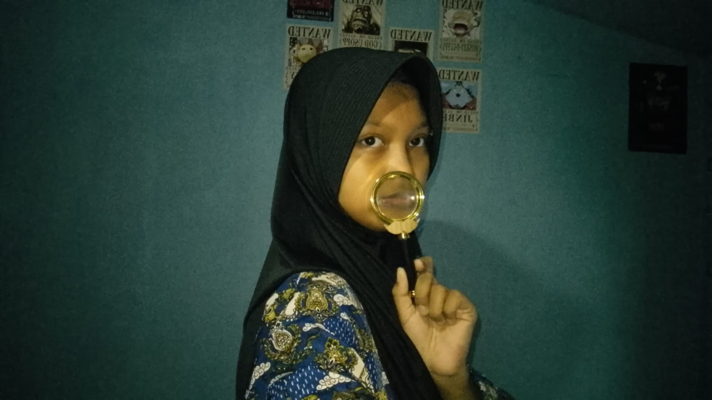
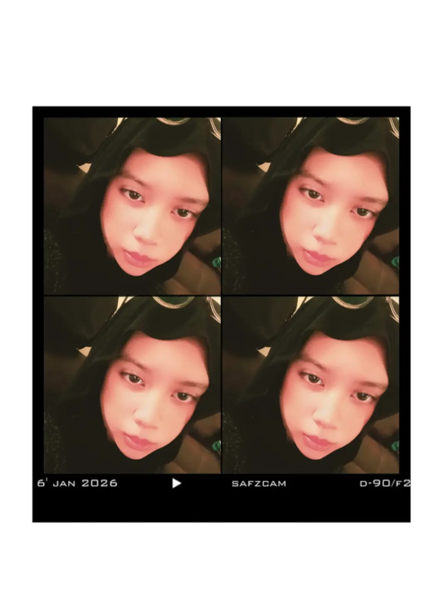
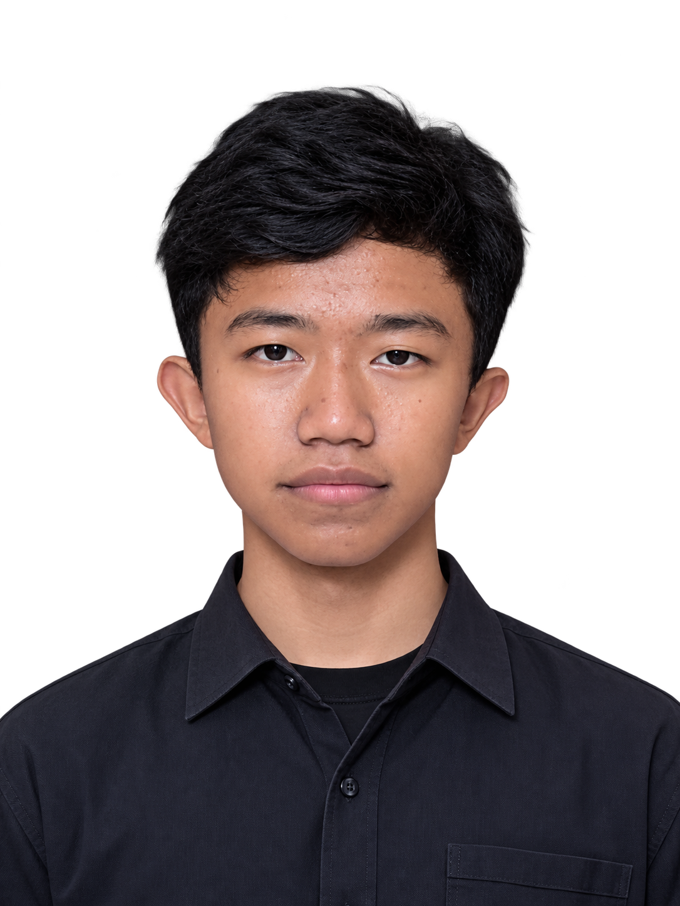

PROYEK PEMBELAJARAN KELAS X
Belajar dan Peduli Lingkungan.
Mengenal pengelolaan sampah melalui integrasi berbagai materi pembelajaran. Belajar bersama untuk menciptakan lingkungan yang lebih baik.
Kenali ProyekMulai dari Hal Kecil
Langkah kecil untuk perubahan besar.
TENTANG WEBSITE
Belajar dalam Satu Ruang
Website ini merupakan repositori hasil belajar siswa kelas X yang menggabungkan beberapa mata pelajaran dengan tema pengelolaan sampah. Melalui website ini, berbagai hasil pembelajaran dapat diakses dalam satu tempat.
TUJUAN PROYEK
Membangun Kesadaran Lingkungan
Melalui proyek ini, siswa diharapkan mampu memahami pentingnya pengelolaan sampah, menganalisis data, serta menerapkan pengetahuan dari berbagai mata pelajaran dalam kehidupan sehari-hari.
TIM PENGEMBANG
Anggota Kelompok
Orang-orang di balik pembuatan website ini.

Saffa Nazwa Zahira
Front End Developer
PPLG X-3
Sayna Cardova Normansyah
Data Analyst
PPLG X-3
Ridho Oktapia Rahman
AI Engineer
PPLG X-3